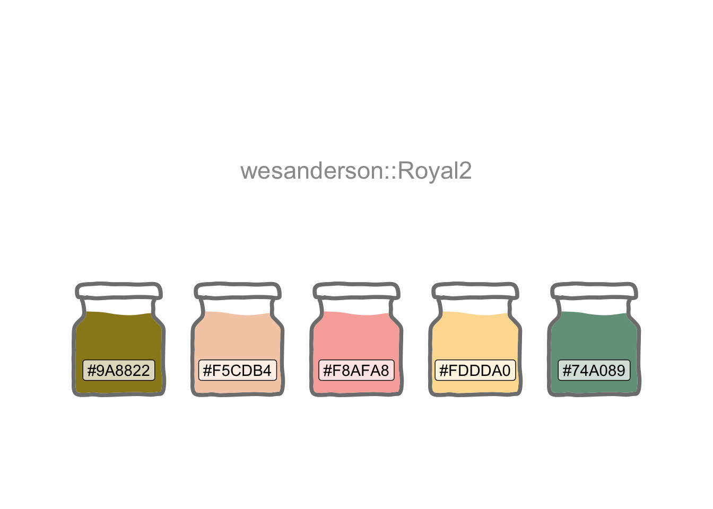
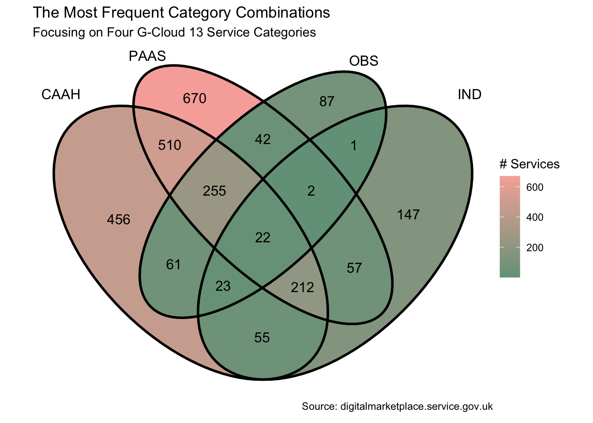
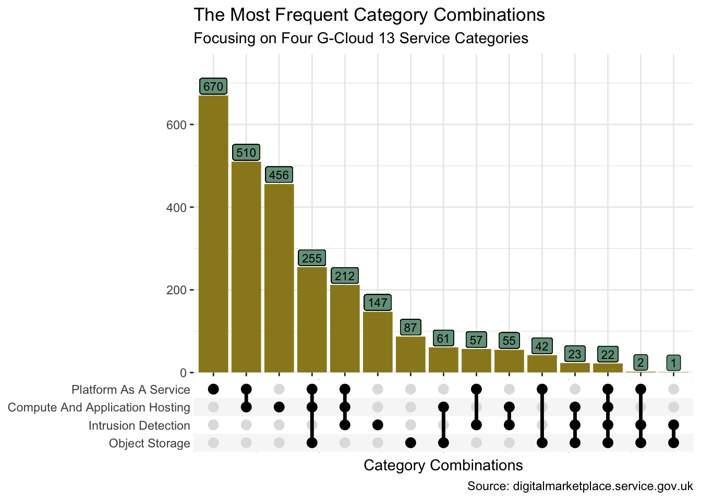

Where Clouds Cross

When visualising a small number of overlapping sets, Venn diagrams work well. But what if there are more. Here’s a tidyverse approach to the exploration of sets and their intersections.
In Let’s Jitter I looked at a relatively simple set of cloud-service-related sales data. G-Cloud data offers a much richer source with many thousands of services documented by several thousand suppliers and hosted across myriad web pages. These services straddle many categories. I’ll use these data to explore the sets and where they cross.
theme_set(theme_bw())
(cols <- wes_palette("Royal2"))
I’m going to focus on the Cloud Hosting lot. Suppliers document the services they want to offer to Public Sector buyers. Each supplier is free to assign each of their services to one or more service categories. It would be interesting to see how these categories overlap when looking at the aggregated data.
I’ll begin by harvesting the URL for each category’s search results. And I’ll also capture the number of search pages for each category. This will enable me to later control how R iterates through the web pages to extract the required data.
path <-
str_c("https://www.applytosupply.digitalmarketplace",
".service.gov.uk/g-cloud/search?lot=cloud-")
lot_urls <-
c(
str_c(path, "hosting"),
str_c(path, "software"),
str_c(path, "support")
)
cat_urls <- future_map(lot_urls, \(x) {
nodes <- x |>
read_html() |>
html_elements(".app-lot-filter__last-list li a")
tibble(
url = nodes |>
html_attr("href"),
pages = nodes |>
html_text()
)
}) |>
list_rbind() |>
mutate(
pages = parse_number(as.character(pages)),
pages = if_else(pages %% 30 > 0, pages %/% 30 + 1, pages %/% 30),
lot = str_extract(url, "(?<=cloud-)[\\w]+"),
url = str_remove(url, ".*(?=&)")
)
version <- lot_urls[[1]] |>
read_html() |>
html_elements(".app-search-result:first-child") |>
html_text() |>
str_extract("G-Cloud \\d\\d")So now I’m all set to parallel process through the data at two levels. At category level. And within each category, I’ll iterate through the multiple pages of search results, harvesting 100 service IDs per page.
I’ll also auto-abbreviate the category names so I’ll have the option of more concise names for less-cluttered plotting later on.
Regex is used here to isolate pieces of text:
-
[[:digit:]]{15}finds the 15-digit service ID in the scraped link -
\\Q+\\Efinds the literal+character rather than interpreting it as a one or more quantifier (i.e. if the\\Qand\\Ewere not specified)
tic()
data_df <-
future_pmap(
list(
cat_urls$url,
cat_urls$pages,
cat_urls$lot
),
\(x, y, z) {
future_map_dfr(1:y, \(y) {
refs <- str_c(
"https://www.applytosupply.digitalmarketplace",
".service.gov.uk/g-cloud/search?page=",
y,
x,
"&lot=cloud-",
z
) |>
read_html() |>
html_elements("#js-dm-live-search-results .govuk-link") |>
html_attr("href")
tibble(
lot = str_c("Cloud ", str_to_title(z)),
service_id = str_extract(refs, "[[:digit:]]{15}"),
cat = str_remove(x, "&serviceCategories=") |>
str_replace_all("\\Q+\\E", " ") |>
str_remove("%28[[:print:]]+%29")
)
})
}
) |>
list_rbind() |>
select(lot:cat) |>
mutate(
cat = str_trim(cat) |> str_to_title(),
abbr = str_remove(cat, "and") |> abbreviate(3) |> str_to_upper()
)
toc()1355.652 sec elapsedNow that I have a nice tidy tibble (Müller and Wickham 2022), I can start to think about visualisations.
I like Venn diagrams. But to create one I’ll first need to do a little prep as ggVennDiagram (Gao 2022) requires separate character vectors for each set.
host_df <- data_df |>
filter(lot == "Cloud Hosting") |>
group_by(abbr)
keys <- host_df |>
group_keys() |>
pull(abbr)
all_cats <- host_df |>
group_split() |>
map("service_id") |>
set_names(keys)Venn diagrams work best with a small number of sets. So we’ll select four categories.
four_cats <- all_cats[c("CAAH", "PAAS", "OBS", "IND")]
four_cats |>
ggVennDiagram(label = "count", label_alpha = 0) +
scale_fill_gradient(low = cols[5], high = cols[3]) +
scale_colour_manual(values = cols[c(rep(4, 4))]) +
labs(
x = "Category Combinations", y = NULL, fill = "# Services",
title = "The Most Frequent Category Combinations",
subtitle = glue("Focusing on Four {version} Service Categories"),
caption = "Source: digitalmarketplace.service.gov.uk\n"
)
Let’s suppose I want to find out which Service IDs lie in a particular intersection. Perhaps I want to go back to the web site with those IDs to search for, and read up on, those particular services. I could use purrr’s reduce to achieve this. For example, let’s extract the IDs at the heart of the Venn which intersect all categories.
four_cats |> reduce(intersect) [1] "498337261767401" "735625897584273" "941404079421892" "468519278288161"
[5] "528818827198493" "590998313986731" "745846238180953" "173163384195854"
[9] "924318408511326" "920078916328776" "507106315499984" "247181335014212"
[13] "760565690434196" "567990943722560" "674396953847294" "546389562586229"
[17] "616594390875571" "720996025285364"And if we wanted the IDs intersecting the “OBS” and “IND” categories?
[1] "498337261767401" "622063745429810" "146737546710992" "735625897584273"
[5] "282378513056803" "824432812764583" "941404079421892" "924245378460936"
[9] "468519278288161" "979714835327372" "528818827198493" "361367891935175"
[13] "590998313986731" "964621745018513" "745846238180953" "406334290207572"
[17] "173163384195854" "924318408511326" "226716894364641" "920078916328776"
[21] "507106315499984" "247181335014212" "760565690434196" "567990943722560"
[25] "390438216681657" "263304084312287" "133984215794494" "674396953847294"
[29] "761608237467474" "426708477587492" "147659063793653" "546389562586229"
[33] "616594390875571" "172104444338022" "720996025285364" "266583255948268"
[37] "420184478022971" "647839522738604" "746066603748154" "829256437326217"
[41] "455997758057773"Sometimes though we need something a little more scalable than a Venn diagram. The ggupset package provides a good solution. Before we try more than four sets though, I’ll first use the same four categories so we may compare the visualisation to the Venn.
set_df <- data_df |>
filter(abbr %in% c("CAAH", "PAAS", "OBS", "IND")) |>
mutate(category = list(cat), .by = service_id) |>
distinct(service_id, category) |>
mutate(n = n(), .by = category)
set_df |>
ggplot(aes(category)) +
geom_bar(fill = cols[1]) +
geom_label(aes(y = n, label = n), vjust = -0.1, size = 3, fill = cols[5]) +
scale_x_upset() +
scale_y_continuous(expand = expansion(mult = c(0, 0.15))) +
theme(panel.border = element_blank()) +
labs(
x = "Category Combinations", y = NULL,
title = "The Most Frequent Category Combinations",
subtitle = glue("Focusing on Four {version} Service Categories"),
caption = "Source: digitalmarketplace.service.gov.uk"
)
Now let’s take a look at the intersections across all the categories. And let’s suppose that our particular interest is all services which appear in one, and only one, category.
set_df <- data_df |>
filter(n() == 1, lot == "Cloud Hosting", .by = service_id) |>
mutate(category = list(cat), .by = service_id) |>
distinct(service_id, category) |>
mutate(n = n(), .by = category)
set_df |>
ggplot(aes(category)) +
geom_bar(fill = cols[2]) +
geom_label(aes(y = n, label = n), vjust = -0.1, size = 3, fill = cols[3]) +
scale_x_upset(n_sets = 10) +
scale_y_continuous(expand = expansion(mult = c(0, 0.15))) +
theme(panel.border = element_blank()) +
labs(
x = "Category Combinations", y = NULL,
title = "10 Most Frequent Single-Category Services",
subtitle = "Focused on Service Categories in the Cloud Hosting Lot",
caption = "Source: digitalmarketplace.service.gov.uk"
)Suppose we want to extract the intersection data for the top intersections across all sets. I could use functions from the tidyr package to achieve this.
cat_mix <- data_df |>
filter(lot == "Cloud Hosting") |>
mutate(x = cat) |>
pivot_wider(service_id, names_from = cat, values_from = x, values_fill = "^") |>
unite(col = intersect, -service_id, sep = "/") |>
count(intersect) |>
mutate(
intersect = str_replace_all(intersect, "(?:\\Q/^\\E|\\Q^/\\E)", ""),
intersect = str_replace_all(intersect, "/", " | ")
) |>
arrange(desc(n)) |>
slice(1:21)
cat_mix |>
rename(
"Intersecting Categories" = intersect,
"Services Count" = n
)| Intersecting Categories | Services Count |
|---|---|
| Platform As A Service | 501 |
| Compute And Application Hosting | 182 |
| Networking | 142 |
| Archiving Backup And Disaster Recovery | 107 |
| Other Storage Services | 94 |
| Archiving Backup And Disaster Recovery | Compute And Application Hosting | Nosql Database | Other Database Services | Networking | Platform As A Service | Search | Block Storage | Object Storage | Other Storage Services | 76 |
| Logging And Analysis | 67 |
| Other Database Services | 57 |
| Infrastructure And Platform Security | 57 |
| Compute And Application Hosting | Platform As A Service | 51 |
| Archiving Backup And Disaster Recovery | Compute And Application Hosting | Content Delivery Network | Data Warehousing | Distributed Denial Of Service Attack Protection | Firewall | Infrastructure And Platform Security | Intrusion Detection | Platform As A Service | Protective Monitoring | 39 |
| Relational Database | 38 |
| Container Service | 34 |
| Message Queuing And Processing | 29 |
| Infrastructure And Platform Security | Intrusion Detection | Logging And Analysis | Protective Monitoring | 27 |
| Archiving Backup And Disaster Recovery | Compute And Application Hosting | Nosql Database | Relational Database | Other Database Services | Networking | Platform As A Service | Search | Block Storage | Other Storage Services | 23 |
| Archiving Backup And Disaster Recovery | Compute And Application Hosting | Firewall | Infrastructure And Platform Security | Intrusion Detection | Load Balancing | Logging And Analysis | Networking | Platform As A Service | Protective Monitoring | 22 |
| Block Storage | Object Storage | Other Storage Services | 22 |
| Archiving Backup And Disaster Recovery | Other Storage Services | 20 |
| Compute And Application Hosting | Container Service | Platform As A Service | 20 |
| Infrastructure And Platform Security | Networking | 20 |
And I can compare this table to the equivalent ggupset (Ahlmann-Eltze 2020)visualisation.
set_df <- data_df |>
filter(lot == "Cloud Hosting") |>
mutate(category = list(cat), .by = service_id) |>
distinct(service_id, category) |>
mutate(n = n(), .by = category)
set_df |>
ggplot(aes(category)) +
geom_bar(fill = cols[5]) +
geom_label(aes(y = n, label = n), vjust = -0.1, size = 3, fill = cols[4]) +
scale_x_upset(n_sets = 22, n_intersections = 21) +
scale_y_continuous(expand = expansion(mult = c(0, 0.15))) +
theme(panel.border = element_blank()) +
labs(
x = "Category Combinations", y = NULL,
title = "Top Intersections Across all Sets",
subtitle = "Focused on Service Categories in the Cloud Hosting Lot",
caption = "Source: digitalmarketplace.service.gov.uk"
)
And if I want to extract all the service IDs for the top 5 intersections, I could use dplyr (Wickham et al. 2022) and tidyr (Wickham and Girlich 2022) verbs to achieve this too.
I won’t print them all out though!
top5_int <- data_df |>
filter(lot == "Cloud Hosting") |>
select(service_id, abbr) |>
mutate(x = abbr) |>
pivot_wider(names_from = abbr, values_from = x, values_fill = "^") |>
unite(col = intersect, -service_id, sep = "/") |>
mutate(
intersect = str_replace_all(intersect, "(?:\\Q/^\\E|\\Q^/\\E)", ""),
intersect = str_replace(intersect, "/", " | ")
) |>
mutate(count = n_distinct(service_id), .by = intersect) |>
arrange(desc(count), intersect, service_id) |>
add_count(intersect, wt = count, name = "temp") |>
mutate(temp = dense_rank(desc(temp))) |>
filter(temp %in% 1:5) |>
distinct(service_id)
top5_int |>
summarise(service_ids = n_distinct(service_id))| service_ids |
|---|
| 1026 |
R Toolbox
Summarising below the packages and functions used in this post enables me to separately create a toolbox visualisation summarising the usage of packages and functions across all posts.
| Package | Function |
|---|---|
| base | abbreviate[1]; as.character[1]; c[7]; library[8]; list[5]; rep[1] |
| dplyr | filter[7]; add_count[1]; arrange[2]; count[1]; dense_rank[1]; desc[3]; distinct[4]; group_by[1]; group_keys[1]; group_split[1]; if_else[1]; mutate[14]; n[4]; n_distinct[2]; pull[1]; rename[1]; select[2]; slice[1]; summarise[1] |
| furrr | future_map[1]; future_map_dfr[1]; future_pmap[1] |
| future | plan[1] |
| ggVennDiagram | ggVennDiagram[1] |
| ggplot2 | aes[6]; element_blank[3]; expansion[3]; geom_bar[3]; geom_label[3]; ggplot[3]; labs[4]; scale_colour_manual[1]; scale_fill_gradient[1]; scale_y_continuous[3]; theme[3]; theme_bw[1]; theme_set[1] |
| ggupset | scale_x_upset[3] |
| glue | glue[2] |
| purrr | list_rbind[2]; map[1]; reduce[2]; set_names[1] |
| readr | parse_number[1] |
| rvest | html_attr[2]; html_elements[3]; html_text[2]; read_html[3] |
| stringr | str_c[6]; str_extract[3]; str_remove[4]; str_replace[1]; str_replace_all[4]; str_to_title[2]; str_to_upper[1]; str_trim[1] |
| tibble | tibble[2] |
| tictoc | tic[1]; toc[1] |
| tidyr | pivot_wider[2]; unite[2] |
| wesanderson | wes_palette[1] |